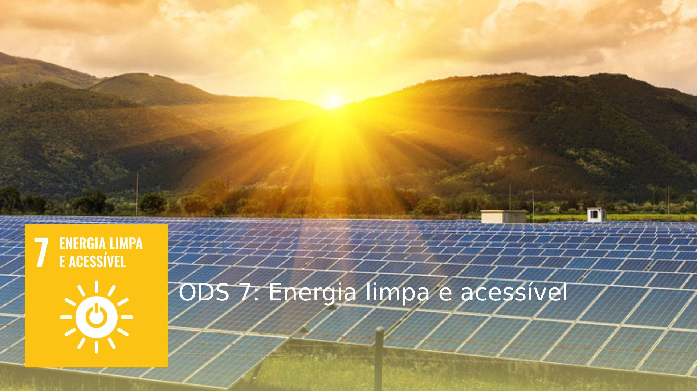
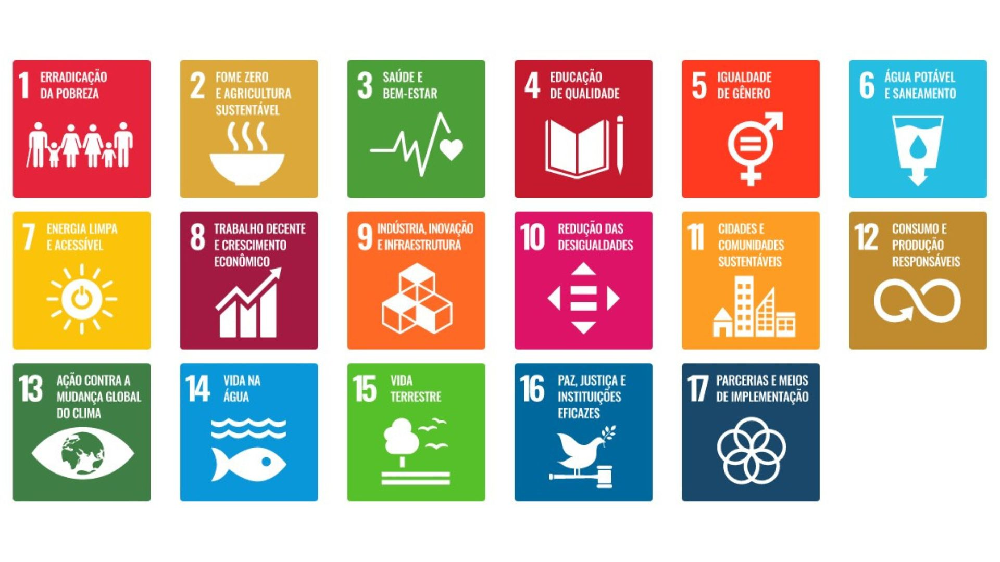
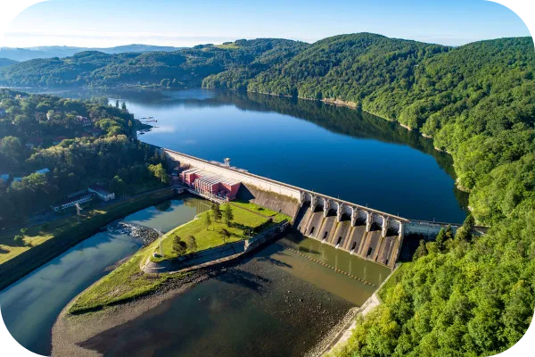
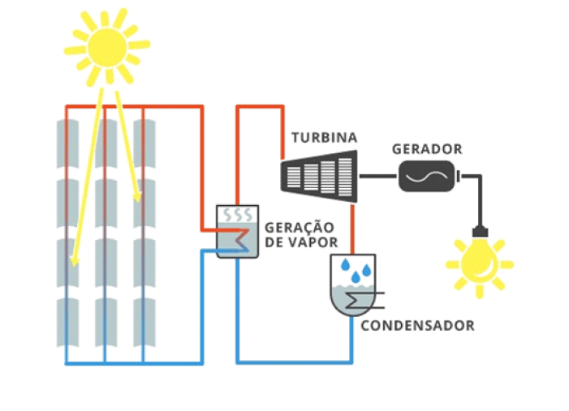

Objetivos
7.1
7.2
7.3
Atualmente, a maior fonte de energia do Brasil é a hídrica,
proveniente de hidroelétricas, e que é responsável por
de 57,6% do fornecimento, seguida pela eólica, com 11%,
mas que
depende do clima.
Em todo o mundo, 789 milhões de cidadãos não têm eletricidade em
casa.
no Brasil, 990 mil pessoas não têm acesso à energia elétrica.
O país já é um dos que mais utilizam fontes renováveis em sua
matriz energética, o que se deve,
principalmente,
à elevada
participação das
hidrelétricas na geração
de eletricidade
e no consumo de etanol em
automóveis.
Exemplos de energia limpa, acessível e sustentável

O próprio Brasil é um exemplo de energia limpa,
com 57,6% da energia sendo gerada por hidrelétricas.
Além disso, o país também possui um futuro
promissor com a energia eólica, que gera 11% da
energia do país.
A Islândia é um país que está na linha de frente
na energia sustentável, com 95% da energia vindo
de forma limpa (nesse caso, a geotérmica).
A Suécia também possui uma grande quantidade
de energia renovável, com mais de 50% de fontes desse
tipo, além da promessa de eliminar os combustíveis
fósseis até 2050.
Energia solar heliotérmica e fotovoltaica

Enquanto a energia fotovoltaica se baseia na radiação
mexer com os condutores e semi condutores,
a energia heliotérmica usa o calor da radiação para
gerar vapor, que almienta uma turbina, que por sua
vez alimenta um gerador, como uma mistura
de hidrelétrica e energia fotovoltaica.